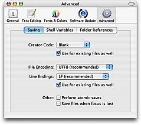

TextMate has a few options in the advanced preferences which affect how to save files.

Atomic saves mean that instead of overwriting the file, TextMate saves to a new file and once this succeeds, overwrites the old file. This has the advantage that if your machine should crash while saving a file, you do not run the risk of losing the contents of both the old (last-saved) and new files.
The downside is that since a new file is actually written to disk (with a new inode), you may break an alias to the file, although this happens only if you also moved the file, or will move it, since path has precedence over inodes when resolving aliases. Also, the Finder will reposition the icon of the file each time you save it (which is only a problem if the file is in a folder you keep in sight).
The creator code is how Classic Macs associated a file with its application. On OS X the association is mainly through the file extension, which has the advantage that if you one day get a better program (!) to handle a given file type, you only need to update the association in one place, instead of changing the creator code of all your saved files. For this reason the recommendation is to not set this or set it to Blank.
TextMate is heavily biased toward UTF-8. UTF-8 is an ASCII compatible encoding, so using it should give no problems with existing tools such as grep, diff, ruby (the interpreter), gcc (the compiler) etc.
Since the file system uses UTF-8 for filenames, Terminal is set to UTF-8 by default (to have the result from e.g. ls show correctly). This means that if you cat a non-ASCII file in Terminal or run a script which outputs more than ASCII (e.g. uses ellipsis or curly quotes), it will only show correctly if the output is UTF-8 (unless you change Terminal's encoding).
In addition, UTF-8 is the only encoding that can represent all the characters you can type on your Mac. Even things like the euro symbol (€) will give a problem with the older (legacy) encodings.
And as an extra bonus, UTF-8 is the only 8 bit encoding which is recognizable with a near 100% certainty, which means that as long as you use UTF-8, you should no longer experience opening a file and the text editor making a wrong guess about the encoding used (which can mess up the file if you then save it without noticing it).
A final argument for UTF-8 is that TextMate is only providing the infrastructure for a lot of functionality. All this functionality is written as scripts and these work with the current document, files in your project, the selection etc. An action might be to transform text, show a result as HTML in a new document etc. In almost all these situations, having to deal with encoding is impractical and sometimes not even possible (like if the result can not be represented using the encoding of the source), so for all this stuff, UTF-8 is assumed.
There is a post on the TextMate blog about how to handle UTF-8 in miscellaneous situations (POST'ing data to a web-server, setting the encoding for LaTeX documents, etc.).
Having said all that, it is possible to change the default encoding and if you only need to save out a single file with another encoding you can adjust that in the Save As… dialog. The list of encodings is short and it is intentionally that way. If you need to use other encodings, the current advice is to use iconv.
You can run iconv -l for a list of the hundreds of encodings it supports.
To convert a set of files to UTF-8 in the terminal, you can run something like this:
for f in *.txt; do iconv -f mac -t utf-8 "$f" >"$f.utf8"; done
Starting with Tiger, OS X supports setxattr and friends.
TextMate makes use of extended attributes to store the carets position, bookmarks, what text is folded and is likely to make further use of extended attributes in the future.
For filesystems which do not natively support extended attributes (like network mounted disks), OS X instead stores the extra information in a file named ._«filename», where «filename» is the name of the original file.
Since not all users think that this extra (hidden) file is worth having in order for TextMate to remember state, it is possible to disable the use of extended attributes by quitting TextMate and running the following from the shell:
defaults write com.macromates.textmate OakDocumentDisableFSMetaData 1
If you are working with a project where you test your work by switching to another application (e.g. Terminal or a browser) you can set TextMate to save all modified files, when the focus is lost. That way, when you switch to the other application, TextMate will automatically save all your changes.